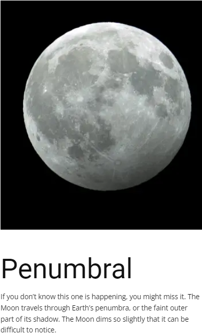
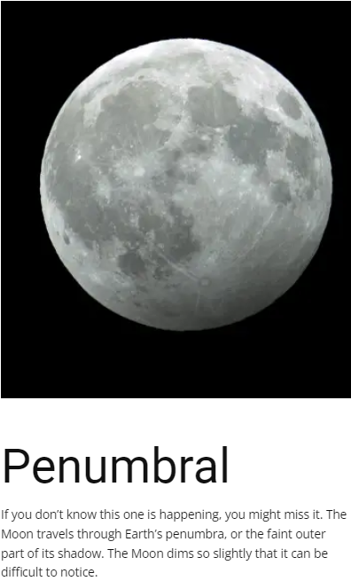
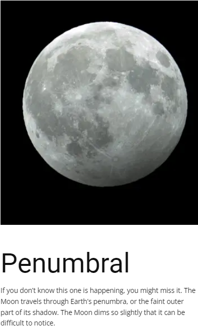

Phases

 

A lunar eclipse is an astronomical event that occurs when the Moon moves into the Earth's shadow, causing the Moon to be darkened. Such alignment occurs during an eclipse season, approximately every six months, during the full moon phase, when the Moon's orbital plane is closest to the plane of the Earth's orbit.
This can occur only when the Sun, Earth, and Moon are exactly or very closely aligned (in syzygy) with Earth between the other two, which can happen only on the night of a full moon when the Moon is near either lunar node. The type and length of a lunar eclipse depend on the Moon's proximity to the lunar node.
The first mention of a lunar eclipse was found in the Chinese book Zhou-Shu, a book of the Zhou Dynasty. The book was discovered in 280 AD, in a tomb of a king or noblemen. The eclipse mentioned in this book took place many centuries before that time.
A solar eclipse happens when the Moon passes between the Sun and Earth, casting a shadow on Earth that either fully or partially blocks the Sun's light in some areas. This only happens occasionally, because the Moon doesn't orbit in the exact same plane as the Sun and Earth do
How often does a blood moon/total lunar eclipse occur? Blood moons are not a common occurrence—two total lunar eclipses occur in a single year about once every three and a half years, and three total lunar eclipses take place in the same year about every 200 years.
a total lunar eclipse lasts a few hours, with totality itself usually averaging anywhere from about 30 minutes to over an hour. This is due to the large relative size of Earth over the Moon (the Moon's diameter is only about 2150 miles), therefore casting a large umbral shadow on the Moon.
When an eclipse of the Moon takes place, everyone on the night side of Earth can see it. About 35% of all eclipses are of the penumbral type which are very difficult to detect, even with a telescope. Another 30% are partial eclipses which are easy to see with the unaided eye. Then, Unlike solar eclipses, lots of people get to see each lunar eclipse. If you live on the nighttime half of Earth when the eclipse happens, you'll be able to see it.

Each link in the following table displays a page containing 10 years of lunar eclipses. Every eclipse has links to an eclipse diagram and map of geographic visibility, and a dedicated web page for that eclipse.
| Decade Tables of Lunar Eclipses | |||||
| Decades | |||||
|---|---|---|---|---|---|
| 1901-1910 | 1911-1920 | 1921-1930 | 1931-1940 | 1941-1950 | |
| 1951-1960 | 1961-1970 | 1971-1980 | 1981-1990 | 1991-2000 | |
| 2001-2010 | 2011-2020 | 2021-2030 | 2031-2040 | 2041-2050 | |
| 2051-2060 | 2061-2070 | 2071-2080 | 2081-2090 | 2091-2100 | |
Each link in the following table displays a catalog containing 100 years of eclipses.
| Century Catalogs of Lunar Eclipses | |||||
| Centuries | |||||
|---|---|---|---|---|---|
| 1001-1100 | 1101-1200 | 1201-1300 | 1301-1400 | 1401-1500 | |
| 1501-1600 | 1601-1700 | 1701-1800 | 1801-1900 | 1901-2000 | |
| 2001-2100 | 2101-2200 | 2201-2300 | 2301-2400 | 2401-2500 | |
| 2501-2600 | 2601-2700 | 2701-2800 | 2801-2900 | 2901-3000 | |
For other centuries, see Six Millennium Catalog of Lunar Eclipses: -2999 to +3000
| Global Event: | Penumbral Lunar Eclipse |
|---|---|
| Local Type: | Penumbral Lunar Eclipse, in Cairo |
| Began: | Fri, 5 May 2023, 19:29 |
| Maximum: | Fri, 5 May 2023, 20:22 -0.046 Magnitude |
| Ended: | Fri, 5 May 2023, 22:31 |
| Duration: | 3 hours, 2 minutes |
All times shown on this page are local time. | |
Yousef Shamsaldeen, Web Developer, CV
I'm S'26 a freshman high schooler in Egypt with a huge passion for computer science and entrepreneurship. I'm developing my passion for both areas by searching out more opportunities, learning more about the two fields, and gaining hands-on experience. I aim to continue improving until possessing the mindset and the skillset required to become a pioneer who will have a positive impact on his community in the coming few years. In my free time, I enjoy reading novels or watching MCU movies. I aspire to pursue my undergraduate degree in a USA top university, where I can reach out to new domains of knowledge and find a medium that helps me develop my mindset and skillset further!